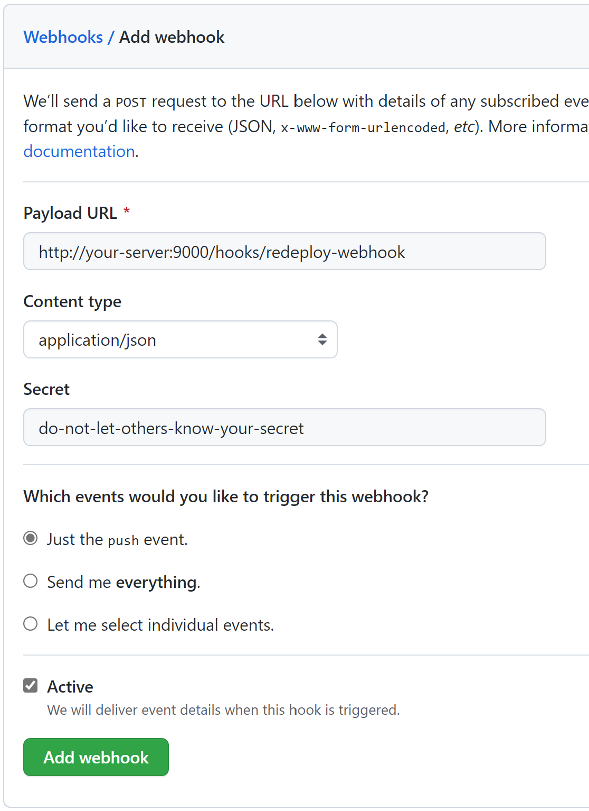

用 GitHub Actions 和 Webhook 自动构建并部署 ASP.NET Core 应用
条评论最近给自己的直播写了个弹幕后端，基于 ASP.NET Core 和 SignalR，实现非常简单。部署反而比预期麻烦很多，因为我之前自动部署的应用都是静态网站，这次要部署动态应用，就遇到了预料之外的问题。
最终，我选择了用 GitHub Actions 构建并推送到另一分支，然后触发 Webhook，由自己的服务器拉取构建好的新版本并重启应用更新。
配置 Webhook 服务器
这种东西当然不要自己写，我选了 adnanh/webhook。在服务器上下载好，编写一个简单的配置文件并运行，用浏览器或 curl 访问一下，观察日志及脚本副作用确定 Webhook 是否正常工作。
1 | - id: redeploy-webhook |
1 | /path/to/webhook -hooks hooks.yaml -verbose |
配置 GitHub Actions
只需要用 Actions 构建并推送到其他分支即可，可以参考此文件，本文不再赘述。
配置 GitHub Webhook
在仓库设置中添加 Webhook，“Payload URL”填写 http://your-server:9000/hooks/redeploy-webhook，其中把“your-server”替换成你服务器的 IP 或域名，最后一部分改为你设置的 Webhook ID。“Content type”选择“application/json”，“Secret”填写一个秘密字符串，在下面选择“Just the push event.”。
添加后，GitHub 会自动触发一次，配置正确的情况下会出现绿勾，如果出现错误，请排查配置问题。
确认配置无误后，随便往存储库 push 点什么东西，触发 CI。回到管理 Webhook 页面，应该会看到又触发了两次 Webhook，一次是 push 代码，一次是 push 构建结果。Webhook 推送数据会用作 Webhook Server 配置的参考。
更新 Webhook Server 配置
参考推送内容和 adnanh/webhook 的文档，更新 Webhook Server 配置，确保只在构建结果分支 push 时触发脚本，同时对传入数据进行验证，防止脚本被恶意触发。
下面是我的配置：
1 | - id: deploy-danmaku |
此配置的的意图是，当“build”分支有“push”事件，并且通过 HMAC SHA1 验证时，才触发脚本，同时从 Webhook 推送中提取存储库链接和 commit ID 信息传入脚本。
编写更新脚本
下面是我的脚本：
1 |
|
此脚本会自动拉取对应 commit，并重新启动服务，应用新版本。
用 systemd 自动启动 Webhook Server
下面，用你喜欢的编辑器创建并编辑“~/.config/systemd/user/webhook.service”，编写 systemd 服务，以便开机自动启动 Webhook Server。
1 | [Unit] |
运行下面的命令，启动服务，并设置开机自动启动：
1 | systemctl --user enable webhook.service |
使用配置 HTTPS（可选）
如果你不想明文 HTTP 通信，可以开启 HTTPS。既可以在 Webhook Server 配置中配置 HTTPS，也可以在反向代理中配置。此处不再赘述。
参考资料
- Deploy using GitHub webhooks
- 用 GitHub Actions 和 SSH 部署静态网站
- systemd user services
- Automatic start-up of systemd user instances
弯路
我在解决自动部署问题时走了一些弯路，也做过一些取舍。例如，我考虑过用 CI (GitHub Actions) 构建和在自己的服务器上构建，最终选了 CI。
权限不足无法应用新版本
我一开始想按照之前写的Post not found: 用 GitHub Actions 和 SSH 部署静态网站 《用 GitHub Actions 和 SSH 部署静态网站》中的方式，用 GitHub Actions 构建并推送到另一分支，然后用 Actions SSH 连上服务器，拉取分支。这里和之前不同的地方在于，静态网站拉取分支后可以立刻生效，而动态应用更新还需要重启服务，才能生效。
由于我打算在 Docker 中部署，运行 Docker 命令需要 root 权限（或者需要把用户添加到“docker”组，这相当于给予 root 权限），而我不想给部署用户太高权限。我写了重启相应 Docker 容器的脚本，把所有权改为 root，并用 chmod +s 赋予 SUID 权限^1。我预期这样就可以让其他用户以 root 权限执行该脚本，但是却还是遇到了权限不足的问题，应该是因为 shell 并没有 SUID 权限。
查阅各种资料，我想到了以下几个解决办法：
直接用 Azure SignalR Service 一站式解决，啥问题都没了。
贵，我马上就不算学生了，用不了学生额度，怕哪天访问量暴增把我信用卡刷爆，排除。
把部署用户加到 docker 组，或者让 GitHub Actions SSH 连接有权限的用户。
太不安全了，排除。
用编译型语言编写重启服务的代码，并给编译好的二进制文件赋予 SUID 权限。
如果在服务器上编译，还要配环境，部署代码改变时还得重新编译；如果在本地编译，还得把编译好的文件传上去，改一点也得重新传，太麻烦，排除。
在 ASP.NET Core 应用内检测文件变化，一旦发生变化就主动退出，由 Docker 自动重启并应用更新。
我不希望在 ASP.NET Core 里添加太多与其应用无关的代码，如果有更好的方法就好了。
直接以部署用户的权限运行服务，这样就不用担心权限不足了。
不错的想法，我了解到 Docker 具有 rootless mode；顺藤摸瓜又了解到 systemd 也可以配置每用户的服务，干脆用 systemd 管理，不用 Docker 也不是不可以。
但是，rootless Docker 会有权限问题，如不能 ping、不能监听低位端口，需要额外添加权限。另外，文档中使用 rootless Docker 之前也需要先停止系统级的 Docker，我担心会冲突。
不用 Docker 又会带回配环境的问题，我在 apt 安装和手动安装 .NET 运行时之间犹豫了很久，还是希望有更好的办法。
不再在 Actions 中 SSH 连接服务器执行代码，而是构建 Docker image 上传到 Docker Hub，由 containrrr/watchtower 自动更新映像。
是个不错的办法，唯一的缺点是新版本不是立刻生效，需要等 containrrr/watchtower 主动检查。
不再在 Actions 中 SSH 连接服务器执行代码，而是改用 Webhook 触发服务器自己执行更新脚本。Webhook 后端可以由有权限的用户运行。
最终选定了这个办法。
Actions artifacts 无法直接下载，需要配置 access token
我认为把构建好的二进制文件上传 artifacts，是比推送到另一分支更好的方式。但是，直接下载 artifacts 会收到“You must have the actions scope to download artifacts.”的错误，必须配置 access token 并授予访问 workflow 的权限。要授予 workflow 权限，只能同时授予访问所有（包括私有）仓库的权限，所以我放弃了这个想法，还是推送到了另一个分支。